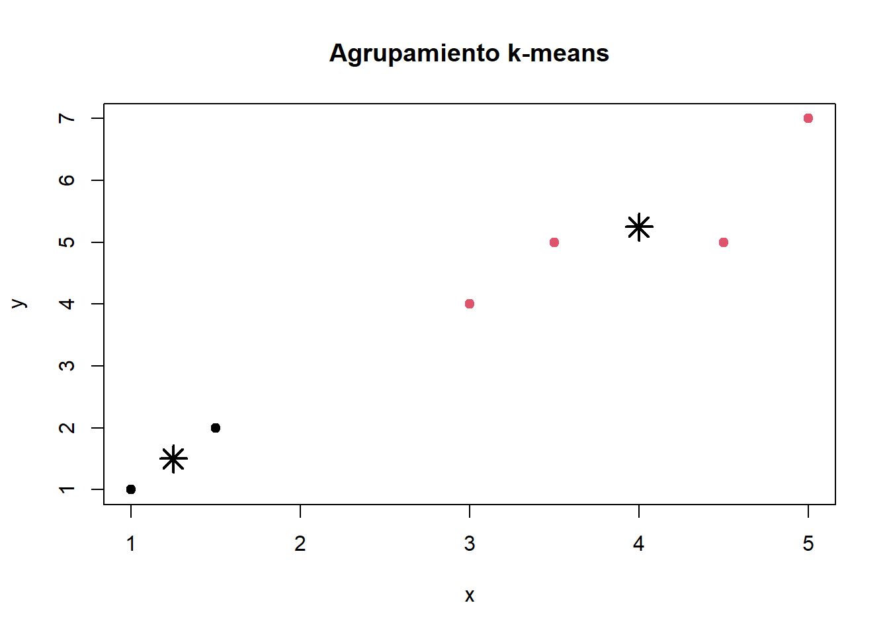
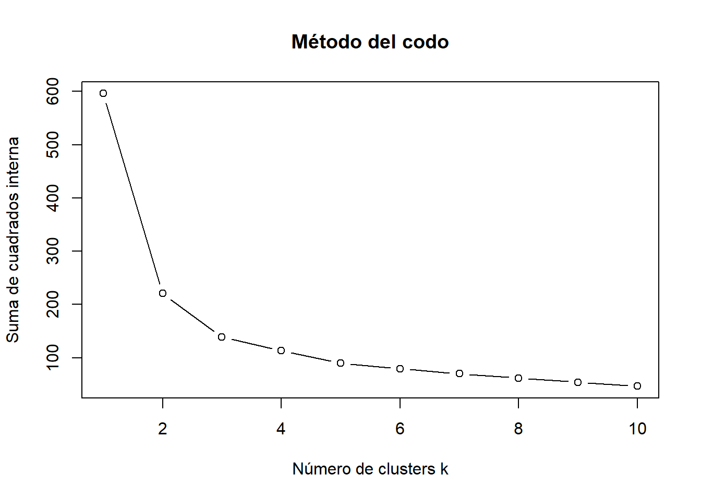

datos <- data.frame(
x = c(1, 1.5, 3, 5, 3.5, 4.5),
y = c(1, 2, 4, 7, 5, 5)
)
datos x y
1 1.0 1
2 1.5 2
3 3.0 4
4 5.0 7
5 3.5 5
6 4.5 5Al finalizar este capítulo podrás:
kmeans();En los capítulos anteriores conocíamos la variable de respuesta. En el aprendizaje no supervisado no existe una etiqueta conocida que indique el grupo correcto. El objetivo es descubrir estructura en los datos.
El agrupamiento o clustering reúne observaciones similares y separa observaciones diferentes.
k-means busca dividir las observaciones en \(k\) grupos. Cada grupo se representa mediante un centroide, que es el promedio de sus observaciones.
El algoritmo repite dos operaciones:
El proceso termina cuando las asignaciones dejan de cambiar o la mejora es muy pequeña.
k-means minimiza la suma de cuadrados dentro de los grupos:
\[ WSS=\sum_{j=1}^{k}\sum_{\mathbf{x}_i\in C_j}\|\mathbf{x}_i-\boldsymbol{\mu}_j\|^2 \]
Aquí, \(C_j\) es el grupo \(j\) y \(\boldsymbol{\mu}_j\) es su centroide.
Considera seis puntos:
| Punto | x | y |
|---|---|---|
| A | 1 | 1 |
| B | 1.5 | 2 |
| C | 3 | 4 |
| D | 5 | 7 |
| E | 3.5 | 5 |
| F | 4.5 | 5 |
Si fijamos \(k=2\), elegimos dos centroides iniciales, asignamos cada punto al más cercano y recalculamos los promedios de ambos grupos. Repetimos hasta estabilizar.
datos <- data.frame(
x = c(1, 1.5, 3, 5, 3.5, 4.5),
y = c(1, 2, 4, 7, 5, 5)
)
datos x y
1 1.0 1
2 1.5 2
3 3.0 4
4 5.0 7
5 3.5 5
6 4.5 5set.seed(123)
modelo_km <- kmeans(datos, centers = 2, nstart = 25)
modelo_kmK-means clustering with 2 clusters of sizes 2, 4
Cluster means:
x y
1 1.25 1.50
2 4.00 5.25
Clustering vector:
[1] 1 1 2 2 2 2
Within cluster sum of squares by cluster:
[1] 0.625 7.250
(between_SS / total_SS = 78.5 %)
Available components:
[1] "cluster" "centers" "totss" "withinss" "tot.withinss"
[6] "betweenss" "size" "iter" "ifault" datos$cluster <- factor(modelo_km$cluster)
plot(
datos$x, datos$y,
col = datos$cluster,
pch = 19,
xlab = "x", ylab = "y",
main = "Agrupamiento k-means"
)
points(modelo_km$centers, pch = 8, cex = 2, lwd = 2)
nstart?k-means depende de los centroides iniciales. nstart = 25 ejecuta el algoritmo varias veces y conserva la solución con menor variación interna.
Si una variable está medida en miles y otra entre 0 y 10, la primera dominará las distancias. Por ello suele ser necesario estandarizar:
\[ z=\frac{x-\bar{x}}{s} \]
X <- scale(iris[, 1:4])
head(X) Sepal.Length Sepal.Width Petal.Length Petal.Width
[1,] -0.8976739 1.01560199 -1.335752 -1.311052
[2,] -1.1392005 -0.13153881 -1.335752 -1.311052
[3,] -1.3807271 0.32731751 -1.392399 -1.311052
[4,] -1.5014904 0.09788935 -1.279104 -1.311052
[5,] -1.0184372 1.24503015 -1.335752 -1.311052
[6,] -0.5353840 1.93331463 -1.165809 -1.048667irisset.seed(2026)
km_iris <- kmeans(X, centers = 3, nstart = 50)
table(
Cluster = km_iris$cluster,
Especie = iris$Species
) Especie
Cluster setosa versicolor virginica
1 0 39 14
2 50 0 0
3 0 11 36Los números de los clusters no tienen significado previo. El grupo 1 no es mejor ni peor que el grupo 2.
km_iris$centers Sepal.Length Sepal.Width Petal.Length Petal.Width
1 -0.05005221 -0.88042696 0.3465767 0.2805873
2 -1.01119138 0.85041372 -1.3006301 -1.2507035
3 1.13217737 0.08812645 0.9928284 1.0141287Cada fila representa un perfil promedio estandarizado. Valores positivos indican niveles superiores a la media; valores negativos, inferiores.
El método del codo compara la suma de cuadrados interna para distintos valores de \(k\).
valores_k <- 1:10
wss <- numeric(length(valores_k))
for (i in seq_along(valores_k)) {
set.seed(123)
ajuste <- kmeans(X, centers = valores_k[i], nstart = 25)
wss[i] <- ajuste$tot.withinss
}
plot(
valores_k, wss,
type = "b",
xlab = "Número de clusters k",
ylab = "Suma de cuadrados interna",
main = "Método del codo"
)
Se busca un punto a partir del cual añadir grupos produce mejoras pequeñas.
Silhouette compara cohesión interna y separación externa. Sus valores se encuentran entre -1 y 1:
if (!requireNamespace("cluster", quietly = TRUE)) {
install.packages("cluster", repos = "https://cloud.r-project.org")
}
sil <- cluster::silhouette(km_iris$cluster, dist(X))
mean(sil[, "sil_width"])
plot(sil)Modifica el número de grupos y observa cómo cambian los centroides y la separación.
#| '!! shinylive warning !!': |
#| shinylive does not work in self-contained HTML documents.
#| Please set `embed-resources: false` in your metadata.
#| standalone: true
#| viewerHeight: 690
#| components: [viewer]
library(shiny)
ui <- fluidPage(
titlePanel("Laboratorio interactivo: k-means"),
sidebarLayout(
sidebarPanel(
sliderInput("k", "Número de grupos", 2, 6, 3, 1),
sliderInput("n", "Número de observaciones", 30, 200, 90, 10),
sliderInput("disp", "Dispersión", 0.2, 2.0, 0.7, 0.1),
numericInput("semilla", "Semilla", 123, 1),
actionButton("actualizar", "Generar y agrupar")
),
mainPanel(
plotOutput("grafica", height = "450px"),
tableOutput("resumen")
)
)
)
server <- function(input, output, session) {
datos <- eventReactive(input$actualizar, {
set.seed(input$semilla)
centros <- matrix(c(-3,-2, 0,3, 3,-1, -2,4, 4,4, 0,-4), ncol=2, byrow=TRUE)
g <- sample(seq_len(input$k), input$n, replace=TRUE)
data.frame(
x = centros[g,1] + rnorm(input$n, sd=input$disp),
y = centros[g,2] + rnorm(input$n, sd=input$disp)
)
}, ignoreNULL=FALSE)
ajuste <- reactive({
set.seed(input$semilla)
kmeans(datos(), centers=input$k, nstart=25)
})
output$grafica <- renderPlot({
d <- datos(); km <- ajuste()
plot(d$x, d$y, col=km$cluster, pch=19,
xlab="Variable 1", ylab="Variable 2",
main=paste("k-means con k =", input$k))
points(km$centers, pch=8, cex=2.2, lwd=3)
grid()
})
output$resumen <- renderTable({
km <- ajuste()
data.frame(
Cluster=seq_len(input$k),
Tamaño=as.integer(km$size),
Centro_X=round(km$centers[,1],2),
Centro_Y=round(km$centers[,2],2)
)
})
}
shinyApp(ui, server)En accidentes de tránsito pueden agruparse municipios, horarios o tipos de accidente usando variables como número de víctimas, frecuencia, hora, zona y severidad. El objetivo no es predecir una etiqueta, sino descubrir perfiles semejantes.
nstart = 50.| Recurso | Descripción | Abrir o descargar |
|---|---|---|
| Presentación en PDF | Síntesis del capítulo para lectura o exposición. | Abrir PDF |
| Presentación editable | Diapositivas en PowerPoint. | Descargar PPTX |
| Infografía | Resumen visual del capítulo. | Abrir infografía |

Los materiales fueron creados con apoyo de NotebookLM de Google a partir del contenido del libro y revisados y adaptados por el autor.
k-means descubre grupos mediante distancias y centroides. Su utilidad depende de una preparación adecuada, una selección razonada de \(k\) y una interpretación basada en los perfiles de cada cluster.
En el siguiente capítulo estudiaremos el Análisis de Componentes Principales (PCA) como técnica de reducción de dimensión.